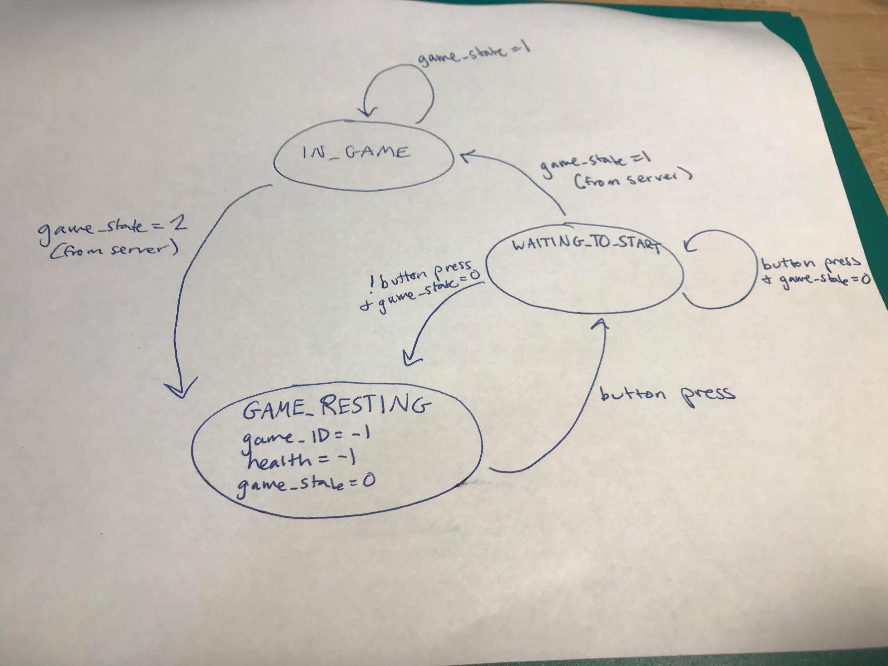

# Overview
Inspired by pop culture’s Iron Man, Dragon Ball Z, and all two player melees, we aspire to create an interactive two-player fighting game where you can actually act out fighting moves and gain points. After signaling for a game to begin, they can begin to battle it out!
## Overall Design
Each player will be wearing a glove that has an ESP32 microcontroller embedded into it along with an IMU, MP3 player, LEDs, a button, and an ADP. When the two push buttons to signal a game to start, epic music will sing out of the speakers on the gloves to signal that the battle has begun. Following this, each player can make certain pre-designated fighting moves in order to try to score points on the other person. The lower-powered "slash" is a swimping motion that takes one health from the other person, shown on their LED health hearts. A stronger charged attack takes a moment to power up, but it can take two healths away. LEDs along the glove light up as the player holds their hand in the charging position, but they must beware because they are open to attack from the other player! Once the green light shines that it is charged, though, they can fire at the other player. Hopefully their opponent puts up the blocking motion, or they are in for a sorry surprise.
Throughout the battle, sound effects come out of the glove microphones when moves are made, and eventually when enough points are racked up by one player, the glove announces the winner. These sound effects allow the players to know what is happening digitally through the battle since they are not actually hitting or throwing things at one another. Through imagination, sound effects, and awesome fighting moves, Sakan Milk Battles: The Game is a great time for all to play.
## Example Battle
<center>
<video width="500" height="400" controls>
<source src="./media/game.mp4" type="video/mp4" >
Your browser does not support the video tag.
</video>
</center>
## Gestures
<center>
Block: Uses the magnetometer on the IMU and a bracelet with a strong magnet on it to sense when your arms cross, protecting you completely from slashes
and allowing you to only take one damage instead of two from a charged up push attack.
</center>
<center>
<iframe src="https://giphy.com/embed/kUUNOrYBDfHUvBo7xD" width="480" height="270" frameBorder="0" class="giphy-embed" allowFullScreen></iframe>
</center>
<center>
Slash: The basic attack. Does one damage normally and zero if your opponent is blocking.
</center>
<center>
<iframe src="https://giphy.com/embed/fGC4fIAiJebQmI3WEX" width="480" height="270" frameBorder="0" class="giphy-embed" allowFullScreen></iframe>
</center>
<center>
Charging: Does nothing by itself, but allows you to charge up to a push attack which is detailed below. Your current charging state is shown with green LEDs.
</center>
<center>
<iframe src="https://giphy.com/embed/SKypggACmGOp8hf91P" width="480" height="270" frameBorder="0" class="giphy-embed" allowFullScreen></iframe>
</center>
<center>
Push: An attack so powerful it requires you to charge up to it first. Unblocked it will do two damage, and even if your opponent blocks, you will still break through to do one damage.
</center>
<center>
<iframe src="https://giphy.com/embed/1zgQeNCJNQ3tMKYRhA" width="480" height="270" frameBorder="0" class="giphy-embed" allowFullScreen></iframe>
</center>
<center>
Game Start: While waiting for a game, your LEDs will be blue. To start a game you and your opponent will both push a button and when the game's started your LEDs will turn pink to display your health.
</center>
<center>
<iframe src="https://giphy.com/embed/1ziUeibCCSr3Zb4ye3" width="480" height="270" frameBorder="0" class="giphy-embed" allowFullScreen></iframe>
</center>
## System Design
####Functional block diagram of the system:
<center>
<img src="./media/systemblockdiagram.jpg" width="600"/>
</center>
There are several components that are wired up to the ESP32 in our system. The IMU is connected to pins 21 and 22, 3.3V power, and ground. The neopixels are connected to 3.3V power, ground, and pin 19 for signal. The button is connected to ground and input pin 15. The MP3 player is powered by 5V, is connected to ground and the TX/RX pins of the ESP32, and allows a speaker to hook up to it. The ADP connects to the power/ground rails that the ESP is connected to, as well as pins 21 and 22. Together all of these components interact in just the right way to allow our game to play!
####State machine block diagrams
<center>
<img src="./media/server-game-start.jpg" width="400"/>
</center>
#####Server-side State machine
<center>

</center>
There are three main states to our system state machine (the fourth one is only used when updating the gesture database for correlation). The first is GAME_RESTING, when no game has started for the player yet. The variable game_state is initialized at 0. If a button is pressed, it will move to WAITING_TO_START. While here, it continually does a GET request to see if someone else is trying to start a game. If they never receive this information and stop holding the button, they return to GAME_RESTING. If they do find out someone is trying to play a game with them, game_state is updated to 1 from the server, and it moved into IN_GAME. Here it remains and does both GET and POST requests with the server, each time updating health and game_state. When the game_state is returned back as 2, meaning the game is over, the player returns to GAME_RESTING, where its variables are re-initialized, and it waits to start a new game.
####Design Challenges and Rationale for Decisions
#####IR Sensors/Receivers
Initially, we were going to use IR sensors and receivers in order to start the game (instead of buttons). One player would hit a button to emmit an IR signal, and when the other person picked up this signal, the gaem woudl start. First, our problem was that the sensors and receivers we had were 2-pronged, and they basically picked up any light from a window, triggering it, which was not ideal. When we got the 3-prong sensors and receivers, we got them to work, but the distance on them was not very large (about two feet). Also, we found out that the IR code and the LED strip code interact badly (as outlined by the LED documentation) - SHNA LINK PICTURE HERE. To simplify things and allow everything to work more smoothly, and to allow players to be further apart when starting a game, we moved to just buttons being pressed allowing the game to start.
#####Speakers with Batteries
The speakers can take up to 5V, and we found out that when the batteries are not very charged, the speaker is not able to play music. This can be easily resolved by having charged batteries, we did not realize until pretty far into our project that you have to enable the ADP to charge your batteries. Once this was realized, we started charging them more effectively.
#####Blocking Code
The gesture recognition code is highly dependent on the loop running at a certain rate. We found that gestures started not being recognized when certain blocking code was put on. One example of this was the LED update code. Each loop, the LEDs are updated with the number of hearts corresponding to health. The LEDs usually have a `delay(50)` after setting each LED in order to have enough time for all of the information to be processed and passed on to the next LED. Unfortunately, this delay affected the gesture data and made it not very accurate. We decided to get rid of the delay to allow the gesture recognition to work, but that is why some of our LEDs randomly flash different colors. Another example of this happening was when we tried to have a GET request every loop while in game in order to update the player's health. This also made the loop too slow for the gesture recognition. To fix this, we had it only do a GET request every certain amount of time.
#####Counterfeit MP3 Players
We had a lot of trouble with our MP3 players because it turned out that the ones we were trying to use were mostly conterfeit ones. This caused many of them to not work, and we had to keep switching them out to figure out which ones did. Fortunately, we ended up getting two that did function. We also accidentally fried one good one along the way because it turned out we had not put in voltage regulating code for the ADP yet. Once that was put in, we did not have any more overheating/frying problems.
#####Health Not Updating
We found that when one person did not make a move for a time while the other person was still attacking them, even if they died they were not aware that they had until they tried making another move. We realized that the global variable `health` does not update unless you do a POST or GET request, and while in game, that was only happening when a move was made. We then added `do_GET(8)`, which is called every certain amount of time and updates all of the player's variables. This way a player can not do anything and still know that they are dying.
####Parts List
* DFRobotDFPlayerMini: This part was on each glove, and along with a speaker, allowed sound effects to be played based on the state of the game.
* Adafruit_NeoPixel led strip: This part was also on each glove. It shows the number of lives each player had in red, when the player is charging in flashing green, when not in game in blue, when calibrating in purple, and when sleeping off.
* 3D printed glove device: We 3D printed a case for the ESP32 board mounted on a metal strap that goes around the player's hand.
####Energy Management
<center>
</center>
The glove draws power through the ESP32, IMU, linear regulators, LED array, and speaker system, with the LEDs and ESP32 consuming an overwhelming amount of energy. The active use of these two energy intensive components are during the games, where there is frequent communication with the server and use of LEDs to display health levels. If the glove were to always be in this energy intensive state, the battery would run out of power in less than an hour! To save power, we can capatalize on the fact that for the majority of the time the glove will not be in a game, and being in this high energy intensive state is not necessary. The acceleration readings of the IMU are also used to determine when the glove is not being used. When there little movement detected by the IMU for specific time duration, which was set to a minute, the LED arrays will be powered off, and the ESP32 will enter a light sleep state. This state can be recognized because it is the only time when the LEDs are off, except when the battery is unplugged. The button can be pressed to wake up the ESP32, which will turn on the LEDs and allow the user to resume the game they were in, or begin a new one. In this low energy sleep state, the glove can stay powered for over five hours! These are huge energy savings.
#### Gesture Correlation
In order to implement gesture recognition, we first collected a database of test gestures and then created a set correlation list in order to compare the current accel values to the set list. In order to collect the database we used the folder labeled data_collection on github which has a server side file that creates a database to store the list of gestures and an arduino file that allows the user to record a gesture by holding down a button to signify when the gesture is happening and then another button to confirm is was a valid gesture to post to the database. Once the database was populated the server side code Correlation.py found in the correlation_proof folder was used to generate a set correlation list. The code takes all the gesture information from the database, finds the average length of a gesture and then uses linear interpolation to transform each gesture list to have the same length. It was then easy to create a correlation list for each gesture by averaging the values for each list index. Since, the IMU collects information from three dimensions (x, y, and z) each gesture actually has three corresponding correlation lists. With the correlation lists made, the next step was to set thresholds to see how closely the current accel values matched the set correlation lists. This was done by performing gestures in real time with the cross correlation values printing to the Serial Plotter to see what reasonable cuttoffs would be for each gesture. The folder Print_ges has code that works solely with the gestures in order to set threshold values and test gestures independently.
## Documentation of code
The code is primarily on two files: server.py and esp32.ino.
###Server-side code
server.py takes care of all the server-side code, which involves handling GET and POST requests from the ESP32. When these two types of requests are made, the function `request_handler(request)` is called. All GET and POST requests pass in values for `action`, `player_ID`, and `game_ID` as query arguments.
Depending on the value of `action`, which indicates the action that the user just performed in the game, the code will process this accordingly.
####POST Requests
If the request is a POST request and the value of `action` is:
* 2, 3, or 4, the action was a slash, push, or block, respectively.<br/><br/>
The section of the code handling these cases will call the helper function `add_action(game_ID, player_ID, action)`, which updates `gestures_table` with this new action. (Helper functions are described in more detail later.)<br/><br/>
The data from the `game_table` corresponding to the current game is then extracted using the helper function `extract_game_info(game_ID)`.<br/><br/>
If this game is not ongoing (its `game_state` is not `1`), the health of the player who made the POST request, `game_state`, and `game_ID` is returned as a string.<br/><br/>
Otherwise if the game is ongoing, the last gesture from each player that hasn't been taken into account yet is extracted from the database via the helper function `extract_player_gestures(player_1, player_2)`. Based on these gestures, the helper function `health_update(health_1, health_2, action_1, action_2)` returns the updated healths of the two players and `update_game_info(game_ID, health_1, health_2, game_state)` updates the healths and game state in `game_table`.<br/><br/>
The health of the player who made the POST request, `game_state`, and `game_ID` is then returned as a string.<br/><br/>
* 7, the action was a button press, meaning that a player is trying to start a game.<br/><br/>
This section of the code checks `gestures_table` to see if another player has also tried starting a game in the last 3 seconds (and if they haven't already been matched with someone). It gets the most recent entry matching these specifications, creates a new game with both of these players in `game_table`, and marks both of the corresponding entries in the `gestures_table` as matched (`checked=1`). The player who first pressed the button to start the game is `player_1` and the other `player_2`.<br/><br/>
If there are no entries, it returns `"-1,0,-1"`.<br/><br/>
####GET Requests
If the request is a GET request and the value of `action` is:
* 1, the code checks the `game_table` for the most recent entry of an ongoing game where `player_1` matches the `player_ID` passed as an argument. (The player who first pressed the button to start the game never received the game information during their POST request with `action=7`, so they must post GET requests to get this information.) It returns the health of `player_1`, `game_state`, and `game_ID` as a string.
* 8, the code calls the helper function `extract_game_info(game_ID)` and returns the health of the player who made the POST request, `game_state`, and `game_ID` as a string.
Both these requests return `"-1,0,-1"` if the database table query returns no matching entries.
####Helper Functions
* `dict_factory(cursor, row)`: Converts SQL rows to dictionary format. This is used to set the `conn = sqlite3.connect(game_db)` setting so that all queries to the database return a dictionary. Modified from [here](https://stackoverflow.com/a/3300514).
* `add_action(game_ID,player_ID,action_ID,time=now,checked=0)`: Adds an entry to `gestures_table` with the corresponding inputs and returns nothing.
* `update_game_info(game_ID, health_1, health_2, game_state)`: Goes into `game_table` updates the row with this `game_ID` with these values. Returns game state.
* `extract_game_info(game_ID)`: Takes in the `game_ID` and goes into `game_table`. Returns the most recent row containing the game_ID as a dictionary of the game information.
* `extract_player_gestures(player_1, player_2)`: Looks at gesture database and finds the two most recent rows where one is `player_1` and one is `player_2`. The timestamp of the rows must be within one second and `checked` for both must equal `0`. If one of the two rows has an action that is not block, change the `checked` value in that database row to `1`. If they're not, one of the players is `None`. Returns a dictionary of the player name and their action.
* `health_update(cur_health_1, cur_health_2, action_1, action_2)`: Takes in the current healths of both players and the last action each of them made. Returns the updated healths of both players as a list.
###ESP32 code
ESP32 code takes input from the player, figures out what gestures the player is trying to make, and then sends that information to the server. It then receives back information about the game and uses that to interact more with the player.
####Libraries
* `mpu9255_esp32.h`: Allowed used of magnetometer and acceleratometer of IMU.
* `adp5350.h`: For regulated use of a battery and power management.
* `U8g2lib.h`: Allowed oled access for initial debugging (not used in final product).
* `compass.h`: Used to calibrate the magnetometer.
* `math.h`: For calculations like the magnitude of the magnetometer readings (for blocking).
* `WiFi.h`: Wifi access to interact with server.
* `SPI.h`: For screen use.
* `DFRobotDFPlayerMini.h`: Allowed use of music player/speakers.
* `Arduino.h`: Main arduino header file.
* `Adafruit_NeoPixel.h`: LED control.
####Setup()
* Serial setup for debugging while plugged into laptop.
* Wifi initialization to be able to interact with the server-side code.
* ADP5350 setup to turn on charging, voltage reading, and enabling the LDO ports.
* IMU setup - done in a helper function that calibrates and starts it.
* Oled setup for initial debugging purposes.
* LED strip initialization - put at rgb(50,0,50).
* Button pullup used for starting a game and waking up from sleep.
* Magnetometer calibration for use of blocking gesture.
* Primary_timer, get_timer, and power_timer set to millis() for timing uses later on.
* Speaker initialization.
* Power variable intially set to true to indicate that the ESP should be on (as opposed to sleeping with little use).
####Loop()
#####Awake vs Asleep
* There are two parts to the loop. If the global variable is true, the code loops through a separate function called loop_on(), which is our state machine and all other integrated code functions. The other part is sleep mode. When the IMU has little movement for more than power_threshold time (currently sent to 60 seconds), the ESP will go into light sleep, and the LEDs will turn off. The ESP will get out of this and go back into the loop_on() part when the button on the board is pressed.
#####Switch State Machine
There are four switch states that control the entire game.
* Case `GAME_RESTING`: In this state, the board is waiting for a game to begin. In case it is reentering this state after just finishing a game, it resets the global game variables game_ID, health, data_timer, and game_state. If the button is pressed, it does `do_POST(7)` (see helper function documentation for this) and causes the next loop to go to `WAITING_TO_START`.
* Case `WAITING_TO_START`: In this state, the player is trying to start a game with the other person. To know if the other person has also pressed the button to try to start a game, it continuously does `do_GET(1)` (see helper function documentation) until the button is no longer pressed, in which case it returns to `GAME_RESTING` because the player has given up on trying to start a game, or if the global variable `game_state` has been changed to 1, which means in game, it will go to `IN_GAME`. This variable is changed by the server information coming back from the constant GET request. If the other player has also posted that they are trying to start a game, and if both of them get the game_state as 1 infromation back form the server, that is when they both go into `IN_GAME`.
* Case `IN_GAME`: There are several things that happen while both players are in game. First, it is checked if the variable `get_timer` has reached the `get_thres`. If it has, it does `do_GET(8)`, which checks the progress of the game from the server in terms of their own health, the state of the game, and the game id. This is useful when the other person has attacked but this player has not done a move in a while. Without this GET request, the player would never know they have lost points until they make a move themselves.
Next, `gesture_stuff()` (see helper function documentation) is called, which updates the global variable current_action. This variable is what move the player is currently making. This can be 'Slash', 'Push', 'Block', or None. Depending on what move the person has made, it goes into a certain if statement. Before this, though, `has_happened(current_action)` checks whether `current_action` has just been posted or if this is a new move. Without this check, one slash move would post a slash to the server multiple times. However, blocking moves do post to the server continuously, since the server has to know if a player is currently blocking while a counter-move is made.
Depending on the move, the MP3 player will player the song associated with the gesture. Then, a post request will be made with the appropriate gesture number sent to the server (2 for slash, 3 for push, 4 for block). `get_timer` is also reset since the global game variables were just updated (and the ESP doesn't need to check again as soon to find out the status of the game).
Finally, if the global variable `game_state` has been changed to 2 from the information coming back from the server, it checks whether you have won or lost. A `game_state` value of 2 means that the game is over. If the player's health is 0 when this happens, it means the player has lost. It then plays the loser music out of the speakers and moves back into `GAME_RESTING` to play another game. If the player's health is greater that 0, the player must have won since the game is over, so it plays the winner music and moves back into `GAME_RESTING`.
* Case `GESTURE_RECOGNITION`: This is in place in case we want to collect more gestures for the correlation data. More gesture collection from more people will make the correlations and therefore the gesture recognition better.
####Helper Functions
* `printDetail(uint8_t type, int value)`: This is an MP3 helper function that allows for diagnosis of what is going on with the module.
* `setup_imu()`: Initializes, calibrates, and starts the IMU module for use with the accelerometer (for slashing and pushing) and magnetometer (for blocking).
* `record_IMU_data()`: Reads the acceleromter data from the IMU and then sets the global variable `sum` to the root of its squares. The global variable `data` is also appended with the x, y, and z values for the correlation database.
* `magnetometer()`: Reads the magnetometer data from the IMU. It then calculates the magnitude of the x, y, and z values and compares it to a threshold. If the magnitude is greater than the threshold, the function returns true. This means that a blocking motion is being made and is used by the gesture functions. Otherwise, returns false.
* `speaker_begin()`: Initializes the MP3 player.
* `do_POST(int action)`: This does a POST request to the server with the location /608dev/sandbox/smathew/final_project/server.py. It sends the values of action, player_ID, and game_ID. The action value is passed in, and it is the current action that is being made by the player. This is called in the loop when in game and a gesture has been determined to have been made. The action can be slash (2), push (3), or block (4). The player_ID is a string identifying the user. The game_ID starts as -1, but when it first starts a game, this is changed to a value given by the server to both players. This function is also called when starting a game with the `action` of 7. This means that the player has pressed the button and is waiting to start a game.
The server sends back three values: health, game_state, and game_ID. `health` is the current health of the player. `game_state` is either 0 for not in game, 1 for in game, or 2 for game over. `game_ID` starts at -1 but is assigned a value by the server once in a game. These values are then parsed and set to the global variables with the helper function `parse_received(String op)`.
* `do_GET(int act)`: This sends a GET request to the server in the same location as the POST request. It sends `act`, `player_ID`, and `game_ID`. `act` is either a 1 or an 8. When it is a 1, it is when the player is first trying to start a game and looking to see if the other person has also tried to start a game. An 8 means that the player is currently in a game and checking what their own health is (in case the other player made a move while they weren't doing anything). The GET request receives back the same three values as the POST and parses them in the same manner.
* `oled_print(String message)`: Was used to print text to the oled when used for debugging.
* `wifi_setup()`: Connects to the wifi.
* `parse_received(String op)`: Takes the data coming back from the POST and GET requests. Information from the server comes back as a string in the form of #,#,#. This parsed based on comma location and sets the global variable `health` to the first number, `game_state' to the second, and `game_ID` to the third.
* `print_wakeup_reason()`: Used for when the ESP32 is set to sleep from inactivity. It prints the wakeup reason to Serial.
* `update_current_act()`: Checks the current correlation values stored in the global correlation variables (corr_val2_x, corr_val2_y, corr_val2_z, corr_val3_x, corr_val3_y, corr_val3_z) and compares them the correlation thresholds needed to classify the movement as a valid action to set current_action.
* `update_list(float running_vals[avg_ges_len], float val)`: Helper function used to update the list of running x, y, and z values given by the accelerometer.
* `update_charged()`: Updates the global variable charged based on the list running_charges. Used so charging doesn't have to be constant in case noise unclassifies the current_action from charging briefly.
* `cross_corr(float &corr_val, float running_vals[avg_ges_len], float corr_vals[avg_ges_len])`: Cross correlates the current acceleration values in one dimension against the set correlation values collected from testing.
* `set_corr_vals(float &corr_x, float &corr_y, float &corr_z, float &corr_val, float gesture_xs[avg_ges_len], float gesture_ys[avg_ges_len], float gesture_zs[avg_ges_len])`: Helper function that cross correlates in all three dimensions using the cross_corr function repeatly.
* `gesture_stuff()`: Executes all the gesture functions needed to keep all global variables associated with gestures updated such as current_action and accelormeter values. Included as a seperate function to make the loop code more easily readable.
* `has_happened(String action)`: Tests to see if the current action has happened in a set period of time. Used to prevent multiple POST requests due to several valid correlation readings from a single physical action.
* `update_leds(uint32_t c)`: Updates the LEDs depending on the current scenario. Provides different colors for calibrating, game waiting to start, health, and charging. The variable c is used to specify color if the strip is fully lit (not for health & charging).